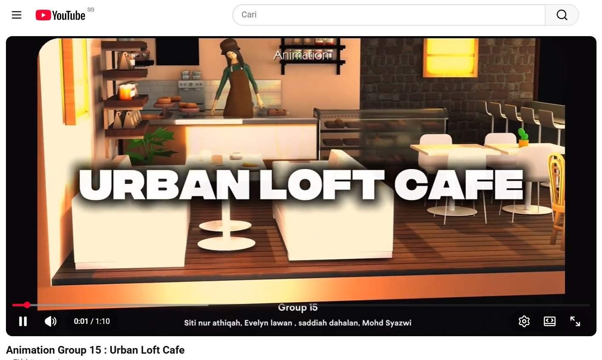
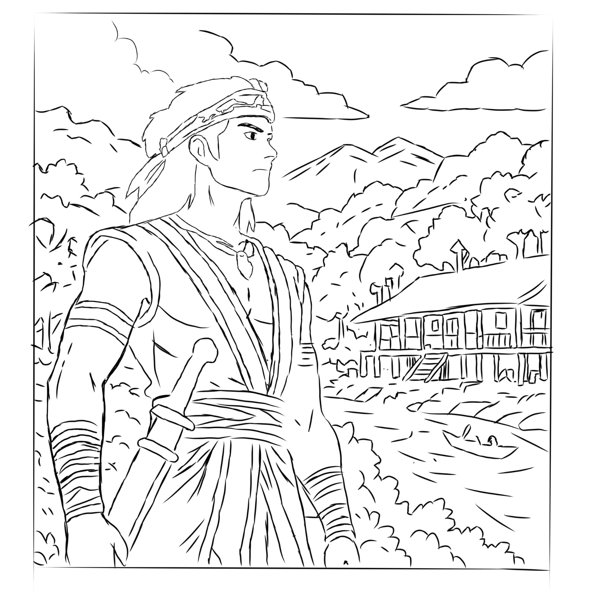
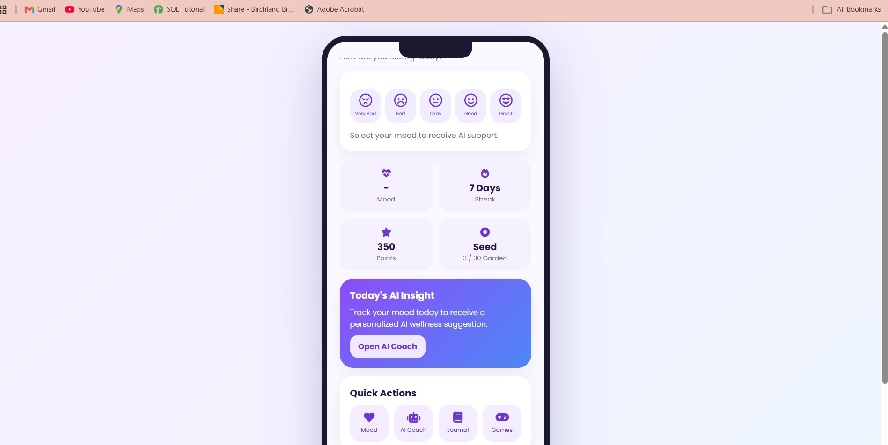
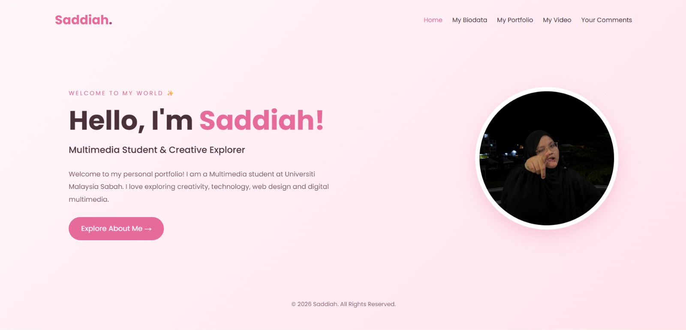
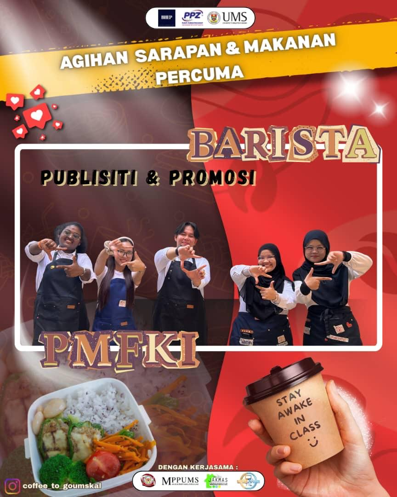
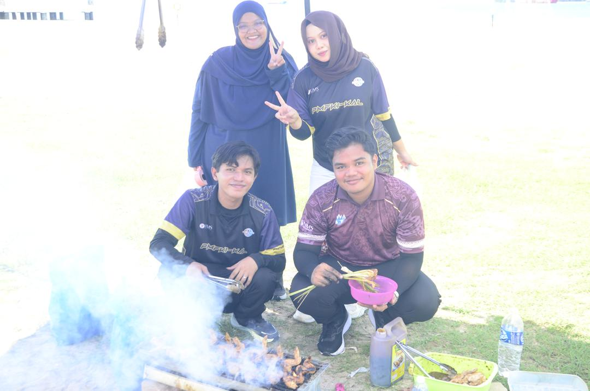
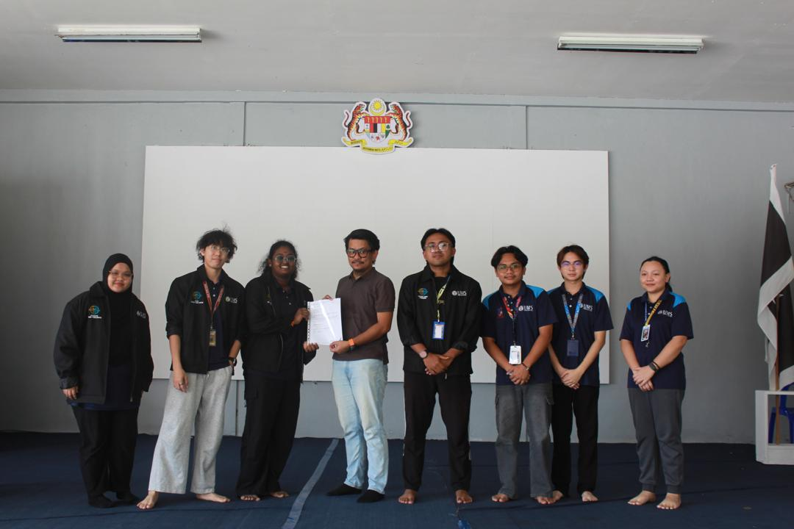
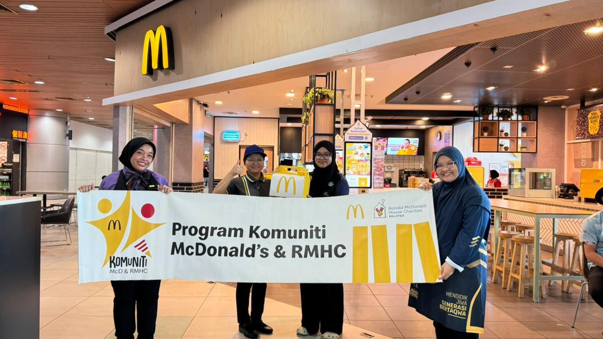

3D AnimationUrban Loft Café
A creative 3D animation project featuring a modern café environment, developed using Blender.
MY CREATIVE JOURNEY ✨
A collection of my creative works, university projects and experiences.

3D AnimationA creative 3D animation project featuring a modern café environment, developed using Blender.

Augmented RealityAn interactive AR storytelling project inspired by Sarawak folklore, featuring 3D pop-up scenes and multimedia elements.

System DesignA system analysis and design project focused on helping students improve productivity and manage distractions.

Web DevelopmentA responsive personal website developed using HTML, CSS and JavaScript with animations and interactive features.
I was actively involved in PMFKI for two consecutive years during my university journey. These experiences helped me develop leadership, teamwork and communication skills.
During my first year, I served as a Secretariat Member of the Welfare Exco. In my second year, I continued my involvement as an Executive Council Member of the Welfare Exco.
Throughout these two years, I gained valuable experience in organisational responsibilities, teamwork, communication and leadership.
A collection of memorable moments throughout my two years in PMFKI.



